Министерство нефтяной промышленности
Управление капитального строительства
ИНСТРУКЦИЯ
по установке и сдаче заказчику
закрепительных знаков и реперов при изыскании
объектов нефтяной промышленности
ВСН 30-81
Миннефтепром
Утверждена
протоколом
Министерства нефтяной
промышленности
от 11 мая 1981 г.
Киев 1981
Инструкция по установке и сдаче заказчику закрепительных знаков и реперов при изыскании объектов нефтяной промышленности /Министерство нефтяной промышленности СССР/.
В инструкции изложены современные требования и указания к составу и объему закрепления трасс магистральных трубопроводов, площадок промышленного и жилищного строительства, трасс внеплощадочных инженерных коммуникаций и обустройства нефтегазопромыслов.
Инструкция разработана институтом «Южгипронефтепровод» при участии института «Гипротрубопровод» и Геологического управления с учетом рекомендаций научно-исследовательских и проектных институтов и управлений Миннефтепрома.
Требования настоящей инструкции являются обязательными для всех организаций и предприятий Министерства нефтяной промышленности, а также других ведомств, для которых выполняются изыскательские работы организациями Миннефтепрома или которые выполняют эти работы для организаций Миннефтепрома.
|
Министерство нефтяной промышленности |
Ведомственные строительные нормы |
ВСН 30-81 Миннефтепром |
|
Инструкция по установке и сдаче заказчику закрепительных знаков и реперов при изыскании объектов нефтяной промышленности |
Настоящая Инструкция устанавливает основные требования к составу и объему закрепления трасс магистральных трубопроводов, площадок промышленного и жилищного строительства, трасс внеплощадочных инженерных коммуникаций и обустройства нефтегазопромыслов, а также к составу и объему технической документации, предъявляемой заказчику при их сдаче.
Требования настоящей Инструкции обязательны для всех организаций и предприятий Министерства нефтяной промышленности, а также других ведомств, для которых выполняются изыскательские работы организациями Миннефтепрома или которые выполняют эти работы для организаций Миннефтепрома.
|
Внесена Управлением капитального строительства, Геологическим управлением и институтом «Южгипронефтепровод» |
Утверждена Министерством нефтяной промышленности 11 мая 1981 г. |
Срок введения в действие 15 июня 1981 г. |
1.2. Требования настоящей Инструкции не противоречат требованиям, установленным главами СНиП II-9-78, СНиП III-2-75, СНиП III-2-78, СНиП II-45-75, СН 225-79, СН 212-73, СН 234-62 законодательными актами и только детализируют их применительно к объектам нефтяной промышленности.
1.3. Закрепительные знаки, устанавливаемые на местности при производстве инженерно-геодезических изысканий, предназначаются для обеспечения процесса проектно-изыскательских работ и могут быть использованы при производстве геодезических работ в строительстве.
1.4. Работы по созданию геодезической разбивочной основы для строительства /строительные сетки, красные линии, строительные базисы и т.п./, а также выносу проекта в натуру согласно главам СНиП «Инженерные изыскания для строительства. Основные положения» в задачу изысканий не входят и данной Инструкцией не рассматриваются.
1.5. После окончания полевых инженерных изысканий для разработки техно-рабочего проекта или рабочих чертежей, независимо от сроков выпуска проектно-сметной документации и начала строительных работ, проектно-изыскательная организация передаёт по акту заказчику все закрепительные знаки и реперы установленные:
по трассам магистральных трубопроводов и ответвления от них;
по трассам кабелей связи и ВЛ, проложенным не параллельно трубопроводам;
на площадках промышленного и жилищного строительства;
по трассам внеплощадочных коммуникаций на незастроенных территориях;
на переходах через водные преграды;
Примечание: Под трассой подразумевается закрепленный на местности теодолитный ход обоснования трассы, съемки площадки.
Окончательное положение осей трасс магистральных трубопроводов, ответвлений от них, трасс внеплощадочных коммуникаций, границ площадок и привязка их закрепительным изыскательским знакам определяется в проекте строительства.
1.6. При производстве инженерно-геодезических работ, подлежащих сдаче органам государственного геодезического надзора или органам по делам строительства и архитектуры, установка знаков должна выполняться в соответствии с требованиями Инструкций Госстроя СССР и ГУГКа при СМ СССР. Сдача установленных геодезических знаков производится органам по делам строительства и архитектуры исполнительных комитетов местных Советов народных депутатов или исполкомам Советов народных депутатов или, по согласованию с ними, ответственному представителю Заказчика согласно Постановления Совета Министров СССР от 4 декабря 1951 г. «Об охране геодезических знаков». Сдача оформляется актом /приложение 1/.
1.7. Субподрядные организации, независимо от ведомственной принадлежности, выполняющие инженерные изыскания для института-генпроектировщика, строго руководствуются настоящей Инструкцией.
Сдачу закрепительных знаков производят непосредственно заказчику. Необходимость участия в приемке-сдаче института-генпроектировщика определяется заказчиком.
1.8. При наличии разногласий между заказчиком и проектно-изыскательской организацией при приемке-сдаче закрепительных знаков окончательное решение принимает Управление капитального строительства Миннефтепрома.
1.9. Транспорт для разъездов при сдаче и приемке предоставляет проектно-изыскательская организация.
2.2. По трассе трубопроводов устанавливаются закрепительные знаки. Закрепительные знаки устанавливаются на местности по створу трассы только в местах, обеспечивающих долговременную сохранность знаков от повреждений, а именно:
в полосе створа автомобильных и железных дорог;
на опушке леса и кустарника;
на просеках;
в лесозащитных посадках;
на перепахиваемых участках, у рек, ручьев, оврагов, балок, каналов, выгоне, сенокосе;
на межевых полосах;
на обочинах проселочных и полевых дорог.
2.3. По створу трассы в любом месте для обеспечения взаимной видимости на знаках устанавливаются вехи. На пахотных землях закрепительные знаки с вехами должны возвышаться над поверхностью земли с учетом растительности сельскохозяйственных культур, а также исключения уничтожения знаков и повреждения ими сельхозтехники.
2.4. В 10-20 м от установленного знака по створу трассы рекомендуется устанавливать второй знак для обеспечения восстановления направления трассы в случае уничтожения знака /приложение 2/.
2.5. Закрепительные знаки устанавливаются на всех переходах через естественные и искусственные препятствия с таким расчетом, чтобы они находились в пределах съемки перехода и были нанесены на топографический план.
2.6. Двумя знаками, по одному с каждой стороны, по створу трассы закрепляются:
пересечения автомобильных дорог 1-3 категорий;
переходы через крупные овраги при ширине более 50 метров;
переходы через каналы;
переходы через реки с шириной зеркала воды в межень более 10 метров.
2.8. Кроме закрепительных знаков по трассе трубопроводов устанавливаются реперы на расстоянии не более 5 км друг от друга. В таежной и заболоченной местности, где нет дорог, грунтовые реперы могут быть заменены временными реперами /приложение 3, рис. 6, 7/.
Основным требованием для установки реперов является выбор надежного места, не подверженного затоплению, размыву, оползням и другим смещениям грунта, а также обеспечивающего сохранность в период строительства и после него и удобства привязки.
2.9. На однониточных переходах через реки необходимо устанавливать следующее количество реперов:
при ширине реки в межень до 30 м - 1 репер;
при ширине реки в межень от 30 м и более - 2 репера /по одному на каждом берегу/.
2.10. На двухниточных переходах устанавливается на каждом берегу по 2 долговременных репера, которые используются при строительстве перехода и контроле положения трубопровода при его эксплуатации.
Реперы устанавливаются в местах, обеспечивающих их сохранность, на расстоянии не менее 200 метров от линии руслового берега и крайней нити трубопровода.
2.11. На пересечениях с трассой трубопровода оврагов и разрушающих балок необходимо устанавливать по одному реперу в местах, обеспечивающих их сохранность.
2.12. На переходах через железные дороги за временных репер принимается отметка головки рельса, которая должна быть замаркирована на шейке рельса и находиться в створе перехода.
2.13. В плановом отношении реперы привязываются к закрепительным знакам трассы, местным предметам или характерным контурам. На все грунтовые реперы составляют кроки /приложение 5/.
2.15. По трассам вторых ниток трубопроводов, прокладываемых параллельно существующим на расстоянии не более 50 м, закрепительные знаки устанавливаются только на вершинах углов поворотов, многониточных переходах через водные преграды, переходах через железные и категорийные автомобильные дороги, балки и овраги.
2.16. При прокладке второй нитки трубопровода на расстоянии более 50 метров от трубопроводов, а также других коммуникаций, закрепительные знаки устанавливаются согласно требованиям п. 2.1-2.14 настоящей Инструкции.
2.17. Трассы линий технологической связи, ВЛ и других инженерных коммуникаций, прокладываемых параллельно трассам магистральных трубопроводов и трассам других линейных сооружений, привязываются к ним и закрепляются только на участках отхода от них на расстоянии более 50 м.
2.18. Линии технологической связи трубопроводов, ВЛ и другие инженерные коммуникации, прокладываемые самостоятельно или на расстоянии более 50 м от других коммуникаций, закрепляются аналогично трассам трубопроводов.
2.19. При прокладке трубопроводов, линий связи параллельно существующим линиям воздушной связи /ЛС/, электропередачи /ВЛ/ на расстоянии не более 50 м закрепительные знаки при изысканиях по трассе не устанавливаются. Трасса трубопровода привязывается к опорам ВЛ или ЛС на углах поворота и в местах изменения привязочных расстояний. Данные привязок наносятся на планы и другие чертежи. В качестве реперов используются элементы опор ЛС и ВЛ.
2.20. Установка закрепительных знаков в пределах охранных зон электрических кабелей и других подземных сооружений не допускается.
А. Площадки
3.1. Требования настоящего раздела распространяется на установку знаков на площадках, не превышающих по площади 100 га и расположенных вне застроенной территории. На площадках, расположенных на застроенных территориях или имеющих площадь более 1 км2, установка знаков должна осуществляться согласно требованиям СН 212-73.
3.2. На территории съемки площадок или вблизи их, а также по контуру съемки устанавливаются закрепительные знаки, грунтовые или степные реперы, марки. При этом между установленными знаками должна быть взаимная видимость.
3.3. Количество знаков съемочного обоснования зависит от категории местности, размеров площадки и масштаба съемки. На 1 км2 незастроенной территории при съемке в масштабе 1:1000 должно быть установлено не менее 16 знаков /п. 4.5 СН 212-73/.
3.4. На территории площадок или вблизи их на расстоянии не более 200 метров, в местах, безопасных от повреждений, устанавливаются грунтовые реперы или стенные марки:
на площадке размером более 10 га устанавливается не менее 3 грунтовых реперов;
от 5 до 10 га - не менее 2 реперов;
от 1 до 5 га - не менее 1 репера;
На площадках размером до 1 га устанавливается 1 временный репер.
3.5. Каждому реперу /знаку/, устанавливаемому на площадках, присваивается свой номер. Именование знаков буквами, римскими цифрами, различными индексами не допускается /приложение 3/.
3.6. Основным требованием для установки репера является выбор надежного места, за пределами зоны строительных работ и подъездных путей, не подверженного затоплению, размыву, оползням и другим смещениям грунта, и удобство привязки.
Б. ТРАССЫ ВНЕПЛОЩАДОЧНЫХ КОММУНИКАЦИЙ
3.7. Требования настоящего раздела распространяются на трассы внеплощадочных инженерных коммуникаций: водоводы, канализации, ВЛ, ЛС, подъездные железные и автомобильные дороги к площадкам, трубопроводы различного назначения, коллекторы, коммуникации к площадкам и на территории нефтегазопромыслов.
3.8. По внутриплощадочным коммуникациям, а также по коммуникациям, проектируемым на прилегающей к нефтеперерабатывающим заводам территории /в районе действия строительных сеток/, закрепительные знаки при изысканиях не устанавливаются.
3.9. Установка закрепительных знаков по трассам инженерных коммуникаций должна выполняться согласно требованиям п.п. 2.1, 2.6, 2.7 за исключением трасс, проходящих по застроенной территории и в проектируемом «корридоре» ряда различных коммуникаций.
3.10. При прокладке нескольких /более 3/ параллельных коммуникаций в одном «корридоре» закрепительные знаки устанавливаются по теодолитному ходу, прокладываемому вне полосы строительства. Закрепительные знаки непосредственно по коммуникациям не устанавливаются.
При прокладке 2-3 параллельных коммуникаций закрепительные знаки устанавливаются только по одной, желательно по трассе ВЛ, железной и автомобильной дорогам, если таковые проектируются в корридоре, с привязкой всех трасс в плане к закрепленной трассе.
3.11. На застроенных территориях трассы внеплощадочных коммуникаций не закрепляются, но углы их поворота должны привязываться к постоянным местным предметам /контурам/ не менее, чем тремя линейными засечками /опоры воздушных линий, бордюры проводов, колодцы подземных коммуникаций, углы зданий, сооружений и т.п./.
А. Закрепительные знаки
4.1. Знаки, закрепляющие на местности точки планового съемочного обоснования, теодолитных, полигонометрических и аналитических сетей и ходов, а также реперы нивелирных ходов по своему назначению и конструкции подразделяются на постоянные, долговременные и временные закрепительные знаки.
Постоянные знаки
4.2. Точки сетей государственного планового обоснования закрепляют наружным знаком, например, пирамидой или металлическим сооружением, установленным над подземным бетонным центром геодезического пункта. Закрепление на местности геодезических пунктов /точек/ постоянными знаками производится в соответствии с утвержденными ГУГК «Центрами геодезических пунктов для территории городов, поселков и промышленных площадок».
4.3. При производстве инженерно-геодезических изысканий на территории городов конструкция постоянных геодезических знаков /в случае сдачи их управлениям городского архитектора/ принимается согласно СН 212-73.
Долговременные и временные знаки
4.4. Долговременные и временные закрепительные знаки /приложение 3/ устанавливаются в процессе производства инженерно-геодезических изысканий и могут быть использованы также при геодезических работах, выполняемых при выносе проекта в натуру, разбивке основных осей сооружений.
Долговременными и временными знаками по конструкции могут быть:
металлические трубы, диаметром 50-60 мм, с толщиной стенки не менее 3 мм, отрезки рельса, угловой или другой профилированный металл с крестовиной в нижней части;
деревянные столбы диаметром не менее 15 см с крестовиной внизу;
пни свежесрубленных деревьев диаметром в верхней части не менее 20 см, обработанные в виде столба с вырезом для надписи и полочкой /прил. 3, рис. 8/;
железобетонные столбы размерами 15´15´150 см;
насечки на скалах, головки рельс, оголовки мостов, опоры ВЛ, сваи на болотах, которые обводятся несмывающейся краской;
на болотах - сваи, которые должны возвышаться над уровнем болота на 0,5-1,0 м.
4.5. Закрепительные знаки длиной не менее 1,5 м устанавливаются на глубину 1 м с устройством земляных конусов высотой 0,6 м вокруг знака. Знаки окапываются круглой канавой диаметром 0,6 м. В северных таежных районах высота знака над поверхностью земли должна приниматься не менее 0,8-1 м.
В местах, где окопка невозможна /болото, скала и т.д./, а также при наличии мерзлого грунта мощностью более 20 см, закрепительные знаки не окапываются. На скалах взамен окопки выкладывается тур высотой не менее 0,5 м.
При большом снежном покрове /более 30 см/ к знаку прикрепляется веха высотой не менее 1,5 м.
4.6. Закрепительными знаками, устанавливаемыми на застроенных территориях, могут служить железнодорожные костыли, металлические костыли, трубки, уголки, забиваемые до уровня земли или твердого покрова на глубину 0,5 м, закрепленные цементным раствором.
4.7. Разрешается использовать в качестве закрепительных знаков элементы конструкций существующих постоянных сооружений /опоры ВЛ, ЛС, колодцы подземных коммуникаций, различные фундаменты и т.п./.
4.8. Все установленные знаки маркируются масляной краской.
Нумерация знаков выполняется арабскими цифрами. Повторение нумерации на одном объекте запрещается /приложение 2/.
4.9. На закрепительных знаках, кроме его номера, указываются:
сокращенное наименование проектно-изыскательской организации;
условное наименование трассы;
год установки знака.
4.10. закрепительные знаки устанавливаются надписью в сторону начальной точки трассы /приложение 2/.
4.11. Маркировка на трассах внеплощадочных коммуникаций выполняется аналогично маркировке, принятой по трассе трубопровода.
Например: газопровод - газ, нефтепровод - нефть, линия электропередачи - ВЛ, линия связи - ЛС, водовод - вод, теодолитный ход - ТХ, автодорога - а/д и т.п.
Б. Реперы
4.12. Реперы могут иметь различную конструкцию и разное назначение. Они бывают грунтовыми и стенными, постоянными и временными, металлическими, железобетонными, деревянными, отмеченные краской площадки на фундаментах, цоколях зданий и т.п.
4.13. Тип конструкции и способ установки репера выбирается в зависимости от его назначения и от конкретных условий мест установки, а также требуемой точности инженерно-геодезических изысканий.
4.14. Постоянные стенные реперы представляют собой специальные чугунные отливки. Эти реперы закладываются в стенах и цоколях капитальных зданий и сооружений на высоте около 0,5 м от поверхности земли с учетом возможности вертикальной установки рейки на выступ репера /приложение 4, рис. 9/.
4.15. Высотные отметки закрепляют на различных неподвижных предметах: стенах, колоннах, фундаментах, выступах различных инженерных сооружений, смотровых колодцах канализации и т.п. Место для установки рейки отмечают гравировкой кернером. Рядом с репером масляной краской пишется его номер.
4.16. При отсутствии капитальных зданий и сооружений устанавливают грунтовые реперы.
Грунтовыми реперами служат металлические трубы, отрезки рельса, профилированный металл, железобетонные монолиты. Нижний конец репера заделывают в бетонный монолит в виде усеченной четырехгранной пирамиды с нижним основанием 40´40 см, верхним основанием 15´15 см и высотой 40 см. Грунтовый репер закладывают на глубину не менее 1,5 метра, на 0,5 м ниже границы максимального промерзания грунта. В верхней части трубы или монолита укрепляют болт, имеющий сферическую головку с отверстием. Это отверстие служит центром знака /приложение 4/.
4.17. Репер, предназначенный для установки в мощных торфяниках и подвижных песках, состоит из металлической трубы диаметром 6 см, в верхнем срезе которой закреплена марка, а к нижнему концу приварена спираль /приложение 4, рис. 11/.
4.18. Репером временного типа могут служить деревянные столбы, крупные гвозди, забитые в основания деревянных опор ВЛ, ЛС или деревянные сооружения, пни спиленных деревьев и т.д. /приложение 3/.
4.19. Для районов распространения многолетней мерзлоты грунтовый репер должен изготавливаться из труб диаметром не менее 60 мм с толщиной стенок не менее 3 мм. К нижней части трубы привариваются несколько якорей в виде дисков. Часть трубы, на которой закреплены диски должна полностью закладываться ниже наибольшей глубины протаивания. После пробуривания скважины нижняя часть ее до высоты 50-60 см заполняется грунтом текучей консистенции, в которую затем погружается якорь. Общая длина трубы должна быть не менее двойной величины наибольшей глубины протаивания.
Временными реперами могут служить деревянные столбы, отрезки уголка, металлических труб о завершенными концами, закладываемые на 0,8 метра ниже границы деятельного слоя, или пни свежесрубленных деревьев диаметром в верхней части не менее 25 см, обработанные в виде столба, с вырезом для надписи, полочкой и забитым кованным гвоздем.
4.20. Грунтовые реперы кроме закладываемых в районах распространения многолетней мерзлоты, окапываются канавами в виде квадрата со сторонами 1,5 и 1,5 метра, глубиной 0,3 м, с насыпкой 0,5 м. В залесенной местности курган заменяется срубом /1,0´1,0´0,3 м/. Сруб заполняется землей, знак не окапывается /приложение 4, рис. 10/.
В местах, где окопка невозможна /болото, обочина, дороги, скала, пески и т.п./, реперы не окапываются.
4.21. Реперы по каждому объекту нумеруют так, чтобы на объекте не было одинаковых номеров. На постоянных грунтовых реперах номер набивают кернером на верхней части трубы или рельса, либо приваривают специальную марку.
4.22. Каждый поставленный репер должен быть привязан примерами не менее, чем к трем наиболее постоянным точкам ситуации /контурам/. В незастроенной местности для грунтовых реперов составляются карточки закладки /кроки/, в которых дается схема привязки их к характерным элементам ситуации, изображенным на карте М 1:100000 /приложение 5/.
5.1. Проектно-изыскательская организация не менее, чем за 5 дней до начала сдачи закрепительных знаков и реперов, установленных при производстве инженерных изысканий трасс и площадок, обязана письменно поставить в известность заказчика о месте и времени встречи.
5.2. Заказчик, получив извещение, обязан дать ответ о своем согласии на дату и место встречи для приемки и направить своего представителя.
Заказчик может по своему усмотрению привлечь для участия в работе комиссии по приемке закрепительных знаков представителей подрядчика или других организаций. Неявка представителей подрядчика или других организаций не является для заказчика основанием для отказа от приемки закрепительных знаков и реперов от проектной организации.
5.3. В процессе приемки проверяется в натуре соблюдение требований разделов 1, 2, 3, 4 настоящей Инструкции и принимается решение о сдаче - приемке закрепительных знаков и реперов, а в случае необходимости отмечаются недостатки и назначаются мероприятия по их устранению.
5.4. По результатам полевой сдачи - приемки закрепительных знаков и реперов составляется акт, который подписывается представителями проектно-изыскательской организации и заказчика.
планы /схемы/ трасс, изготовленные на основе и в масштабах земле - /лесо/ - устроительных планах, а в несельскохозяйственных районах - топографических карт с нанесением на них закрепительных знаков и реперов;
схемы площадок в масштабе 1:2000-1:10000 /в зависимости от размеров площадок /с нанесенными на них установленными на них закрепительными знаками и реперами;
ведомости /таблицы/ закрепительных знаков с указанием расстояний между ними, углов поворота, отметок реперов и эскизы /кроки/ установленных знаков. Указанные ведомости и эскизы /кроки/ могут приводиться на чертежах /схемах/ или отдельно /приложение 5/;
каталоги координат знаков, установленных на территории проектируемых промплощадок и промышленных зон /комплексы заводов, месторождения нефти и газа и т.д./.
5.6. Указанная документация изготавливается проектно-изыскательской организацией в 4 экз. Заказчику передается схема закрепления в 1 экз. непосредственно при сдаче, а остальная документация выдается в установленном порядке в согласованные с заказчиком сроки.
5.7. В случае неявки представителя заказчика для приемки знаков по истечении 5 дней после назначенного срока проектно-изыскательская организация составляет односторонний акт о неявке и в дальнейшем не несет ответственности за сохранность установленных знаков.
Акт с приложениями, предусмотренными пунктом 5.5 настоящей Инструкции, высылается заказчику, после чего закрепительные знаки считаются сданными проектной организацией.
5.8. Восстановление закрепительных знаков, своевременно не принятых заказчиком по его вине или уничтоженных после приемки может осуществляться проектно-изыскательской организацией по отдельному договору. При этом заказчик обязан обеспечить работы по восстановлению знаков необходимым транспортом, рабочими и строительными материалами, о чем производится запись в особых условиях договора.
К выполнению работ по восстановлению знаков проектно-изыскательская организация имеет право приступить только после оформления указанного договора и справки Стройбанка об их финансировании в сроки, согласованные графиком.
АКТ №____
|
|||||
|
Я, нижеподписавшийся ______________________________________________________ (фамилия, имя и отчество сдатчика) ___________________________________________________________________________ (должность, название учреждения, адрес) на основании постановления Совета Министров СССР от 4 декабря 1951 г. «Об охране геодезических знаков» сдал на наблюдение за сохранностью и я, нижеподписавшийся, ___________________________________________________________________________ (фамилия, имя, отчество принявшего) ___________________________________________________________________________ (должность, учреждение) принял на наблюдение за сохранностью геодезические знаки, расположенные на территории _________________________________________________________________ (указать название административного или местного органа) В случае порчи или уничтожения знаков принявший на сохранность обязан немедленно сообщить в отдел Госэнергонадзора по адресу: ___________________________________________________________________________ Акт составлен «_____»________________ 19___ г. в количестве двух экземпляров, из которых один хранится _______________________________________________________ (учреждение, принявшее знаки на хранение, и его адрес) Другой вручен ______________________________________________________________ (фамилия, имя, отчество сдавшего знаки на хранение) *Форма акта утверждена ГУГК Список геодезических знаков, принятых по акту №_____
Сдал ____________________ Принял____________________ (подпись) (подпись) МП. |
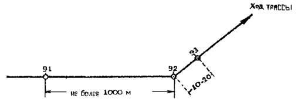
Рис. 1. Закругление угла поворота
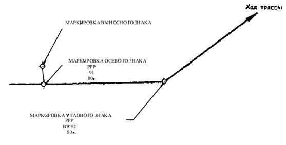
Рис. 2.
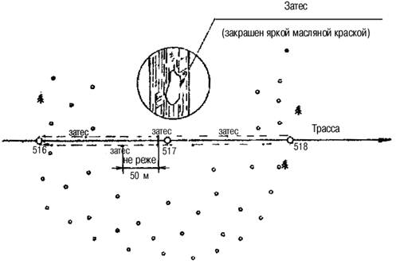
Рис. 3. Закрепление трассы, проходящей через лес
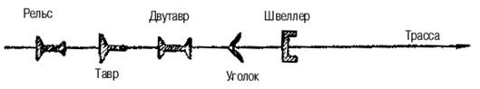
Рис. 4. Ориентация по отношению к трассе нестандартных металлических знаков различных профилей
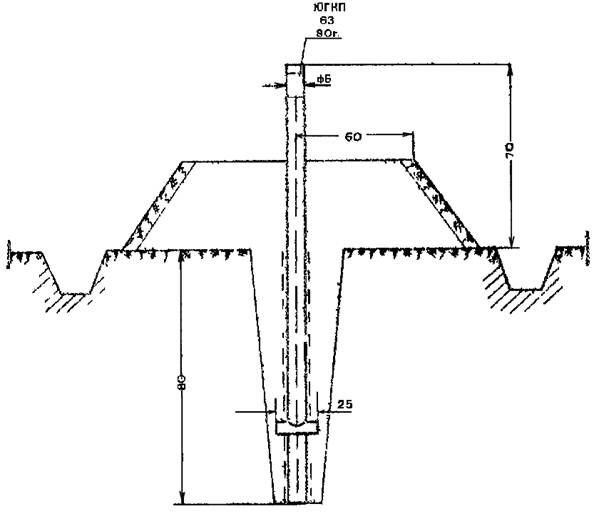
Рис. 5. Тип закрепительного знака с окопкой ровиком
Рис. 6. Тип закрепительного знака (временный репер)
Рис. 7. Тип временного репера заложен в буровую скважину
а) Вид спереди
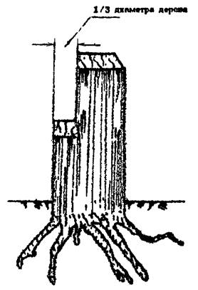
б) Вид сбоку
Рис. 8. Тип знака долговременного закрепления пунктов съемочных сетей в залесных районах
Рис. 9. Стенные реперы
1- металлическая стенная марка; 2 - стенной репер; 3 - репер на цоколе фундамента.
Внешнее оформление места расположения знаков на участках без твердого покрытия поверхности земли
Рис. 10. Тип грунтового репера (размеры в см)
1 - металлическая пластина; 2 - рельс; 3 - дерн; 4 - слой грунта, мох
Рис. 11. Грунтовый репер для районов подвижных песков и торфяников
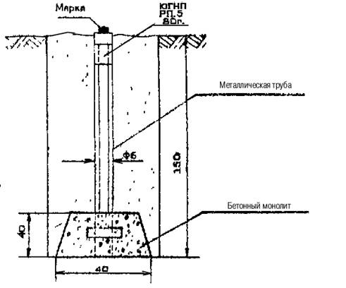
Рис. 12. Тип грунтового репера для открытой местности
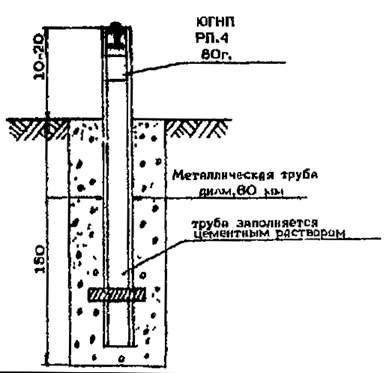
Рис. 13. Тип грунтового репера заложен в буровую скважину
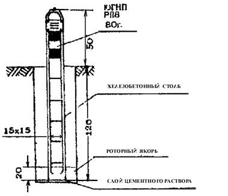
Рис. 14. Тип грунтового репера заложен в буровую скважину
КРОКИ ГРУНТОВОГО РЕПЕРА №ПУНКТ НИВЕЛИРОВАНИЯ 1У КЛАССА 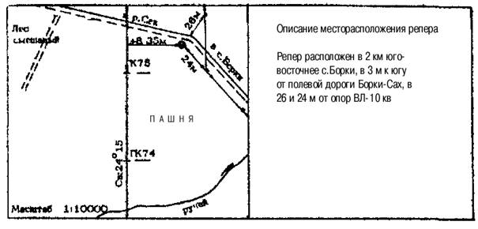 _____ __________________ 19______г. Составитель _______________________ (фамилия, имя, отчество) КРОКИ СТЕННОГО РЕПЕРА № ПУНКТ НИВЕЛИРОВАНИЯ 1У КЛАССА 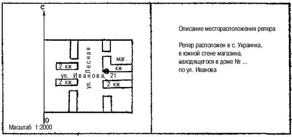 _____ __________________ 19______г. Составитель _______________________ (фамилия, имя, отчество) |
СОДЕРЖАНИЕ